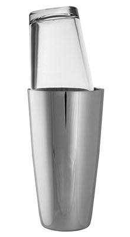
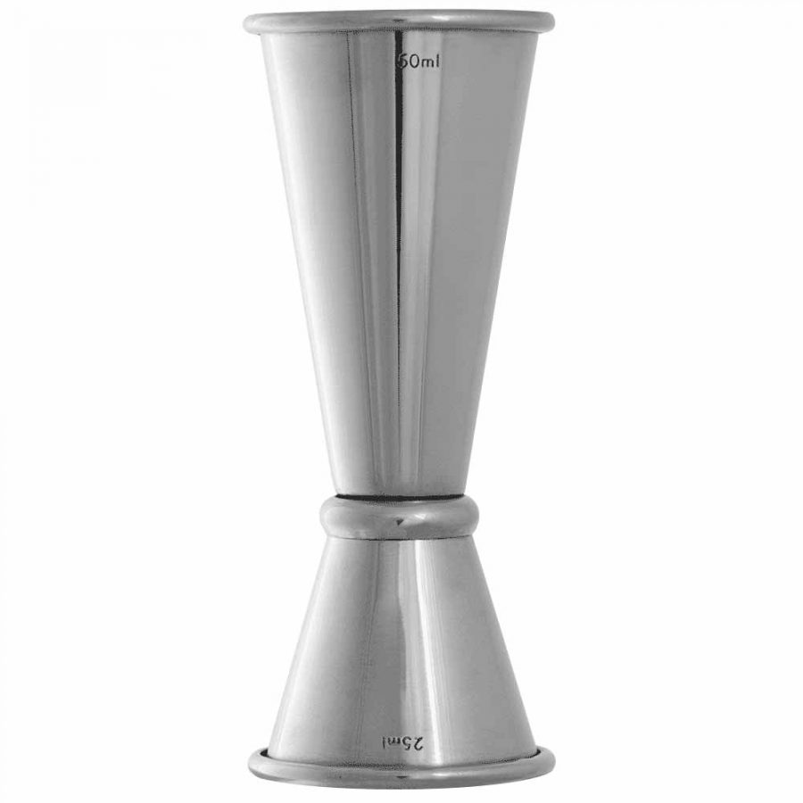
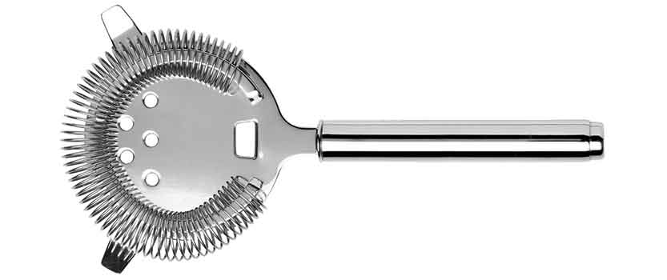
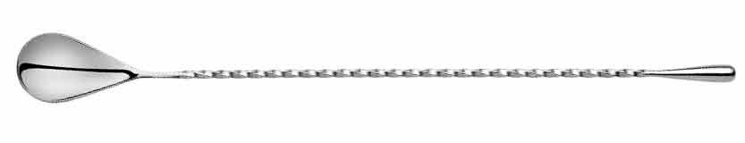

There are at least three varieties of cocktail shaker: The Boston
Shaker: A two-piece shaker consisting of a 28 imp fl oz or 800 ml
metal bottom and traditionally a 16 imp fl oz or 450 ml glass or
plastic mixing glass. The mixing container and bottom are inserted
into each other for shaking or used separately for stirring or
muddling. A separate strainer, such as a Hawthorne or Julep strainer,
are required for this type shaker if crushed ice is used. Without such
a strainer, some bartenders may instead strain by narrowly separating
the two pieces after shaking and pouring the drink through the
resulting gap. The market offers now 18 imp fl oz or 510 ml and 20 imp
fl oz or 570 ml container versions too. Beginning in the late 1870s
and early 1880s, versions of the Boston Shaker appeared with the metal
bottom piece containing integral strainer mechanisms.
Jigger

A Jigger is a small tool that is used to measure the proper amount of
alcohol that should be added to a cocktail. ... The standard jigger is
shaped like an hourglass, with 1 side measuring 1.5oz, which is the
size a traditional shot. The smaller side of the jigger is often
called a "pony" shot and typically measures 1oz.
Strainer

A cocktail strainer is a metal bar accessory used to remove ice from a
mixed drink as it is poured into the serving glass. A type of sieve,
the strainer is placed over the mouth of the glass or shaker in which
the beverage was prepared; small holes in the device allow only
liquids to pass as the beverage is poured.
Spoon

A bar spoon is a long-handled spoon used in bartending for mixing and
layering of both alcoholic and non-alcoholic mixed drinks. Its length
ensures that it can reach the bottom of the tallest jug or tumbler to
mix ingredients directly in the glass.